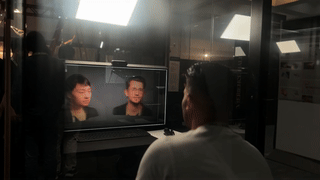
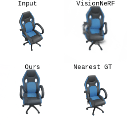

|
Research
I'm interested in machine learning and computer vision, especially making or leveraging generative priors for anything 3D.
|

|
RealmDreamer: Text-Driven 3D Scene Generation with Inpainting and Depth Diffusion
Jaidev Shriram*,
Alex Trevithick*,
Lingjie Liu,
Ravi Ramamoorthi
arXiv, 2024
project page /
paper /
code
Sample 3D scenes from text with diffusion.
|

|
What You See Is What You GAN: Rendering Every Pixel for High-Fidelity Geometry in 3D GANs
Alex Trevithick,
Matthew Chan,
Towaki Takikawa,
Umar Iqbal,
Shalini De Mello,
Manmohan Chandraker,
Ravi Ramamoorthi,
Koki Nagano
Computer Vision and Pattern Recognition (CVPR), 2024
project page /
paper
Photorealistic geometry in 3D generative models by rendering every pixel.
|
|

|
AI-mediated 3D Videoconferencing
Michael Stengel,
Koki Nagano
Chao Liu,
Matthew Chan,
Alex Trevithick,
Shalini De Mello,
Jonghyun Kim,
David Luebke,
Amrita Mazumdar,
Shengze Wang,
Mayoore Jaiswal
SIGGRAPH Emerging Technologies, 2023
project page /
paper
Real-time demo for immersive 3D videoconferencing built with Live 3D Portrait.
|

|
Real-Time Radiance Fields for Single-Image Portrait View Synthesis
Alex Trevithick,
Matthew Chan,
Michael Stengel,
Eric R. Chan,
Chao Liu,
Zhiding Yu,
Sameh Khamis,
Manmohan Chandraker,
Ravi Ramamoorthi,
Koki Nagano
ACM Transactions on Graphics (SIGGRAPH), 2023
project page /
paper /
two minute papers
Real-time encoding and view synthesis from a single portrait image learned with strictly synthetic data.
|
|

|
NerfDiff: Single-image View Synthesis with NeRF-guided Distillation from 3D-aware Diffusion
Jiatao Gu,
Alex Trevithick,
Kai-En Lin,
Josh Susskind,
Christian Theobalt,
Lingjie Liu,
Ravi Ramamoorthi
International Conference on Machine Learning (ICML), 2023
project page /
paper /
code
Distill the knowledge of a 3D-aware conditional diffusion model into a triplane NeRF.
|

|
PVP: Personalized Video Prior for Editable Dynamic Portraits using StyleGAN
Kai-En Lin,
Alex Trevithick,
Keli Chang,
Michel Sarkis,
Mohsen Ghafoorian,
Ning Bi,
Gerhard Reitmayr,
Ravi Ramamoorthi
Computer Graphics Forum (EGSR), 2023
project page /
paper
Leverage the StyleGAN latent space for multi view consistent edits in real-time.
|

|
GRF: Learning a General Radiance Field for 3D Scene Representation and Rendering
Alex Trevithick,
Bo Yang
International Conference on Computer Vision (ICCV), 2021
paper /
code /
video
Per-pixel features improve NeRF and allow it to generalize to new scenes without retraining.
|
|
Updates
|
|
6/19/23: Starting second internship at NVIDIA AI.
6/8/23: Giving talk at the annual UCSD visual computing retreat.
5/29/23: Jensen presents our work at Computex!
5/26/23: Giving talk at Google Labs on Live 3D Portrait.
|
|
{kind=link}